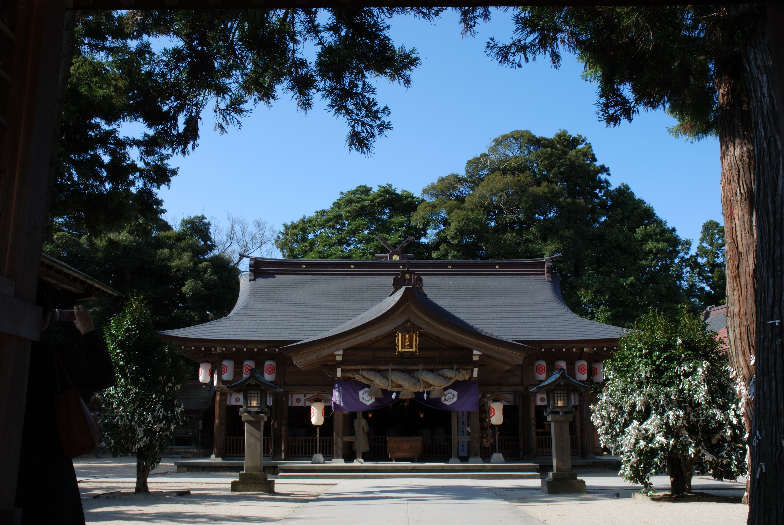

Japan has an immense amount of shrines, dedicated to major, minor, and local gods. Furthermore, these gods live in their shrines. In addition, some of these shrines are also dedicated to powerful leaders, mountains, rivers, and sacred objects. Of these shrines, there are two principle shrines, Yaegaki shrine that houses Susanoo, and Atsuta shrine that holds the sword, Kusanagi.
Yaegaki Shrine is a shrine in Matsue, Japan.
Atsuta Shrine is a shrine in Nagoya, Japan